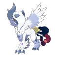

How to extract a ROM file out of a 3DS Virtual Console
by GlazedBelmont
Some games are so rare that a physical copy is very expensive, though if the game is available on the Virtual Console, it is a lot cheaper. Buying a Virtual Console is like buying the cart, you can dump the ROM and use it on emulators and rom hacks.
Note that the same rules apply on digital games and physical games: - You own ONE license so installing the game in multiple consoles is illegal. - Sharing the rom is illegal
For more info, please visit 3ds.eiphax.tech.
If you wanted to dump a GBA bios, click here
Note that this is for 3DS only
This tutorial is valid for:
- Gameboy,
- Gameboy Color,
- NES,
- Gameboy Advance,
NES VC uses the TNES header which makes them not playable if dumped and trying to fix the header is quite a pain. Luckily, we have a GodMode9 script thanks to Validusername16 that fix the header for you.
SNES VC are strangely made so the ROM is altered and cannot be extracted without being vanilla. If you were to extract it correctly, the sound would be destroyed.
What you'll need:
- A 3ds family system (3ds,2ds,etc.)
- CFW (Luma+B9S) if you don't have CFW, go on 3ds.hacks.guide to install it.
- Godmode9 (You should already have it due to the CFW guide.)
- Access to your SD card
- Any valid 3DS Virtual Console game
Section I: Dumping
- Boot while holding the Start button to access Godmode9.
- Press the HOME button
- Hover on 《Title manager》and press A.
- Press A on 《[A] SD CARD》 and wait until it finishes searching.
-
At this point, you will see all your installed titles.
-
Find the Virtual Console game that you want to extract the ROM from and press A on it.
- Press A on 《Open title folder》.
- Press A on the .app file .
- Press A on 《NCCH image options...》.
- Press A on 《Mount image to drive》.
- Confirm with A.
- Now, you will be into the files of the Virtual Console game.


THE NEXT STEPS WILL BE DIFFERENT IF YOU ARE DUMPING A GBA VIRTUAL CONSOLE
Section II: Extracting a Non-GBA Virtual Console
- You will see a folder called 《romfs》 , press A on it.
- Follow the instructions depending on the system:

Gameboy and Gameboy Color
- Open the folder called: 《rom》.
- Press A on the file shown.
- Press A on 《Copy to gm9/out》.
-
Change the file extension to either 《.gb》 for original Gameboy games and 《.gbc》 for Gameboy Color games.
-
It is useful to know that DMG is Original Gameboy and CGB is Gameboy Color.


NES
- Open the folder called 《rom》.
- Press A on the file shown.
- Press A on 《Copy to gm9/out》.
-
Launch this script
-
Select your rom and select the mirroring.
-
Your rom is now playable in an emulator.


Section II.I: Extracting a GBA VC title
- Navigate to the folder named 《exefs》 and press A.
- Press A on the file named 《.code》.
- Press A on 《copy to gm9/out》.
- Press B until you return to main menu of gm9.
- Go in 《SD》 then in 《gm9》 and then in 《out》.
- Press A on the file 《.code》.
- Press A on 《GBA image options》.
- Press A on 《Rename file》.
- Confirm with A.
- Done!


Acknowledgements
I'd like to thank Chromaryu#6870, Spunky#0030, radostin04#1337, Hikaru#1042, eip∞#3283 and validusername16#9643.
Thanks to arm9#6666 for the markdown conversion.
This tutorial wouldn't be the same without your help.
~  GlaZed_Belmont